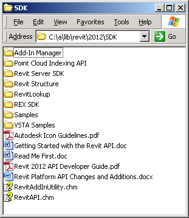

The REX SDK
Last night I returned to the vegetarian restaurant that I remembered from my last visit to Verona. If used to be called Suca Baruca, or crazy pumpkin. Now it changed its style a bit, and its name, to La Fata Zucchina, ristorante biovegetariano; highly recommended!
I recently mentioned the main new features of the Revit 2012 API and pointed out that many wishes have been resolved and new features such as extensible storage added. Besides the addition of some new features to the existing Revit API as we know and love it, there have also been several completely new APIs and SDKs added, warranting entirely new subdirectories in the main Revit SDK folder:

The three new subdirectories are:
- Point Cloud Indexing API
- Revit Server SDK
- REX SDK
Emmanuel Weyermann, Software Development Manager and gran capo of REX, has kindly provided the following introduction to the latter, the REX SDK. It was already available in a kind of preview version for Revit 2011 and has now been promoted to official inclusion in the standard Revit SDK. For more details, please see the ample documentation and sample collection in the REX SDK subfolder of the Revit 2012 SDK. This overview is just provided to whet your appetite and make you aware of the new possibilities it offers:
What is the REX SDK?
What is REX?
The primary goal of REX is to help Revit API developers concentrate on essential development aspects when creating various add-ins for Revit, by providing support for typical, commonly used functionality.
The outcome of this approach is:
- Acceleration of add-in development
- Better consistency across add-ins
- Seamless integration within Revit
REX is a technology or framework supporting development of add-ins for Revit and making them consistent and aligned with the way Revit interacts with users.
The primary goals for the REX framework can be defined as follows:
- Provide a higher level of API interaction with Revit
- Provide components and tools for typical functionalities
- Enable seamless add-in behaviour within the Revit environment
- Enable easy add-in activation and registration
What is the REX SDK?
The REX SDK is a development environment for Rapid Application Development purposes that helps to create, deploy and activate add-ins based on the REX technology.
The core part of the REX SDK is implemented in the form of a Microsoft Visual Studio C# template. Using the template provided, you can quickly build an add-in that has a similar look & feel to Autodesk Revit Extensions.
The REX SDK is composed of:
- Project Template (C#)
- UI definition
- Interactions
- Localization support
- Deployment
- Microsoft Installation project
- Documentation
- Getting Started
- User manual and design guidelines
- API documentation
- Samples
To whom is it addressed?
The advantages of this technology can be useful to all Revit API developers making add-ins for Revit, but it's most efficient for those whom the following aspects are applicable:
- Developing multiple add-ins
- Advanced UI creation for add-ins
- Create commercial add-ins for further distribution
- Developing links with other products
What are the most interesting features for API developers?
- C# project templates, ready to build, distribution and activation in Revit
- Common UI controls such as EditBox, ComboBox, IndexLabel, etc.
- Components for HTML report generation
- Unit conversions and unit based parameters display and editing consistently with Revit
- Automated class data serialization and storage within BIM models
What are the benefits for Revit users?
The primary advantages for end-users are:
- Consistent look & feel across various add-ins.
- Consistent behaviour aligned with Revit product (e.g. unit sensitive values edit and display).
- Could be used on previous developed Revit add-ins to take advantage of dialogues, controls, units, and other utilities.
What is the difference between the Revit and the REX API?
The REX SDK does not provide any additional access to internal Revit functionality. The REX API extends the Revit API functionality with a set of new components.
What products can this technology be applied to?
The REX based approach is applicable for the Revit Architecture, Revit Structure and Revit MEP products.
When are alternative approaches recommended?
The REX SDK provides a set of tools to develop External Commands on top of the Revit API. Some other common structures for Revit API applications are not supported by the REX SDK, including:
- Dynamic model updaters
- Events and event driven applications
- Customized Ribbon panels and controls
In addition, it is not possible to define custom failure definitions from a REX SDK application, as they must be defined in the start-up of an external application. For applications which need to use any of these API features, the REX SDK would not be appropriate.
Another limitation of the REX SDK lies in the supported language: project templates and examples are provided only in C# and are not applicable for development in other .NET compatible languages.
How do I get started?
The following steps will help to create a first REX based add-in for Revit:
- Make sure that Microsoft Visual Studio 2010 is installed
- Make sure that Revit 2012 is installed
- Open the Getting Started Manual and follow these steps:
- Create a project template
- Develop necessary code
- Build the application
- Open Revit and run the add-in
It would be great if you find this useful and helpful in raising productivity and enhancing the look and feel of your Revit API applications. Good luck!